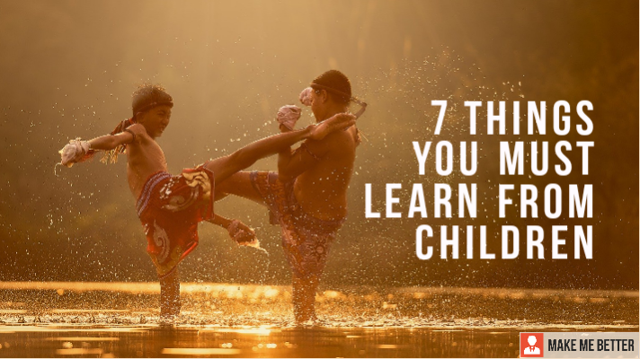
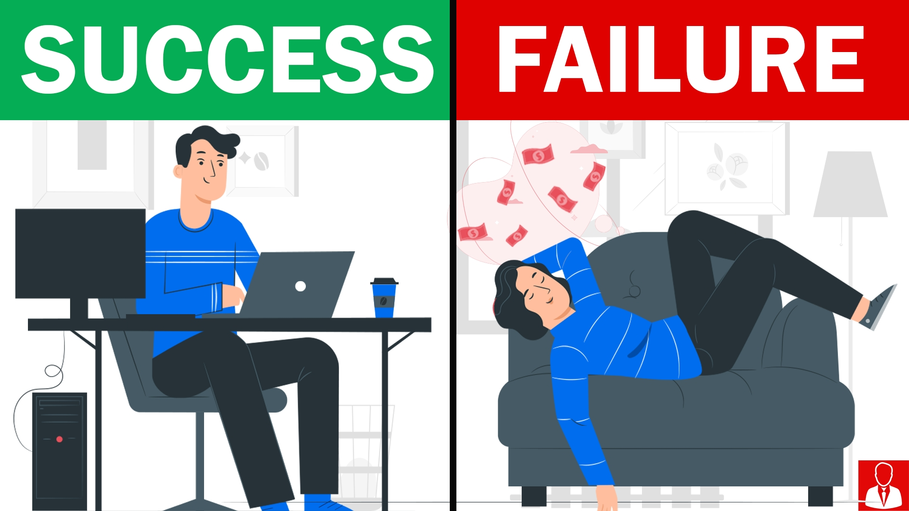
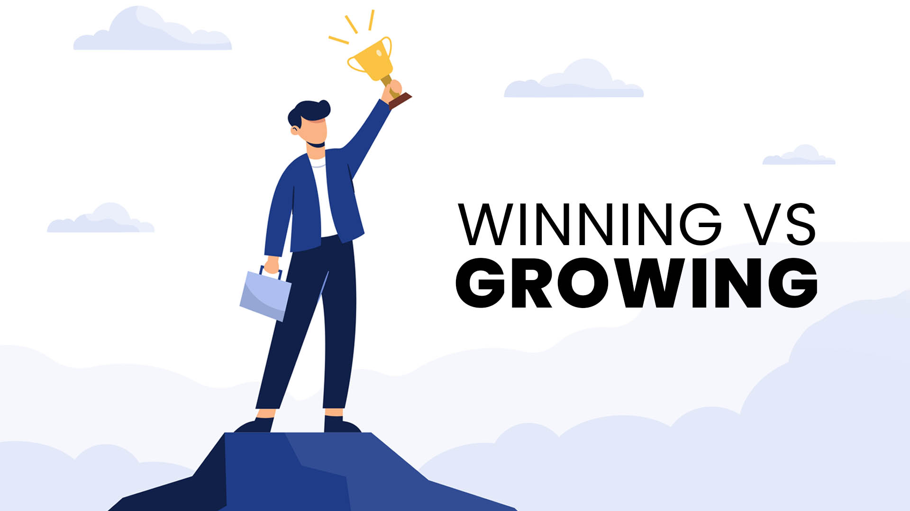

God, grant me the peace to accept what I can't change,
the courage to change what I can, and the discernment to recognize
the difference... Give us the courage to change what has to be changed,
the serenity to accept what cannot be changed, and the wisdom to distinguish between the two.
We should always strive to improve and modify the aspects of our lives that we
dislike. At the same time, it's critical to acknowledge the things we can't alter.
This will allow us to focus our efforts appropriately and avoid wasting time on
things that will not budge no matter how hard we try.

7 Things Must Learn From Children
.
“Children are likely to live up to what you believe of them.”
We all wish we could return to our youth and experience
the moments we missed out on, but this is not feasible. Have you ever noticed how confident
youngsters are and how they go about their daily lives without being frustrated or
complaining? We all want to recreate our childhood memories, yet there are still certain
lessons we can learn from children. Isn't it fascinating? It is, however nowadays people
are more disgruntled and have low morale, and they are not motivated to achieve anything.
When we encounter children in all of these settings, we learn more about life than anything else.
Take a look at what we need to learn from children.

8 Life Changing Habits of Successful People
.
Who doesn't desire to achieve their goals? Everyone aspires to be successful, but only a few do.
Those who achieve success have some traits and practices that have aided them in their endeavors. We are not claiming that these behaviors are required for success, but they will boost your chances of future success. To begin the voyage, one must first determine the destination. Successful people set and stick to their objectives. They don't just work on things haphazardly; instead, they organize their actions to achieve their objectives quickly.
Setting a goal, in actuality, provides us with drive and a direction to work toward. They also have a distinct tendency of setting SMART Goals, which stands for Specific, Meaningful, Action-oriented, Realistic, and Traceable objectives.
Similarly, you should clearly define your objectives; only then will you be able to act and attain them.
They don’t fear changes
Successful individuals aren't afraid of change and don't get stuck in their comfort zones. They are more open minded and wide in their thinking, making them more comfortable taking on new challenges and chances.
They don't keep themselves in check by being afraid of the future. If they notice something with potential, they will endeavor to pursue it, even if it is unusual or challenging.
They do a better job of analyzing the problem and making conclusions based on facts and merit rather than their own beliefs and ways of thinking. To progress in life, we must think more rationally about our choices while remaining free of our comfort zones. They are constantly accountable for their actions and judgments. Unlike others, they don't pass the buck; instead, they maturely accept responsibility and work to improve the situation as much as feasible. Being responsible has another benefit: other people may readily trust you.

What’s more important, Winning or Growing?
.
The majority of individuals enjoy winning. But it typically implies we don't want to lose, and seeing someone else win makes us feel uneasy. Using winning as a goal, on the other hand, is not the best thing we can do for our development.
There are a lot of things in life when there is no obvious winner. Do you have a better chance in life if you marry? What would you do if you earned a raise? In other cases, winning is virtually impossible - can you win by being the greatest in your field? There will almost certainly be someone who outperforms you, which is to be expected. We must concentrate on other components of success. This manner, we gain something even if we lose or someone else wins.
It may be accomplished by posing questions that focus on various components of the process. Is there anything new we've discovered? Is there anything we can learn from this that will benefit us in the future?